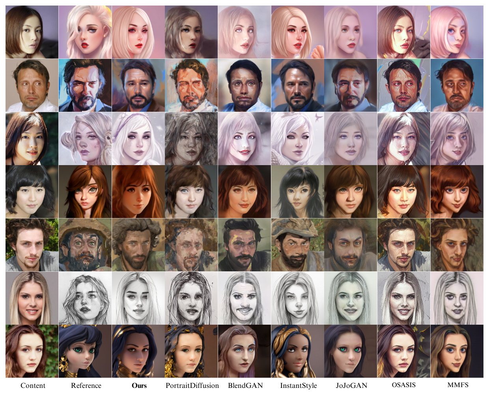

Facial style transfer often suffers from content loss, style degradation, and challenges balancing style and content consistency. Traditional methods, particularly those based on StyleGAN and Stable Diffusion, frequently encounter issues like facial feature distortion and color leakage. To address these problems, we propose ConstFS, a novel method for facial style transfer. Our approach enhances traditional diffusion models by integrating advanced style extraction, identity preservation, and dynamic control mechanisms. We utilize the ControlNet Selector to choose the appropriate ControlNet based on the style image, ensuring optimal image control. Our experiments demonstrate that ConstFS performs better in maintaining style integrity and content consistency, outperforming existing methods in critical qualitative and quantitative metrics.
This paper proposes an innovative facial style transfer method named ConstFS (Controlled and Stable Face Stylization), as illustrated in Fig.~\ref{fig:overview}. Our method aims to achieve high-quality style transfer by precisely controlling the style and content of the generated images, ensuring superior visual effects. The proposed approach contains the following 5 modules:
Comparison to Previous Methods. Including StyleGAN-Based methods and Stable-Diffusion-Based methods, we utilize the default implementations of these works.
| Method | Art-FID↓ | FID↓ | LPIPS↓ | CLIP-Score↑ |
|---|---|---|---|---|
| Ours | 8.41 | 2.24 | 0.66 | 85.26 |
| BlendGAN | 8.18 | 1.39 | 0.64 | 67.18 |
| JoJoGAN | 9.55 | 1.07 | 0.55 | 74.86 |
| OSASIS | 8.03 | 2.59 | 0.68 | 64.89 |
| MMFS | 9.25 | 4.46 | 0.67 | 69.55 |
| Method | Art-FID↓ | FID↓ | LPIPS↓ | CLIP-Score↑ |
|---|---|---|---|---|
| Ours | 14.14 | 2.65 | 0.74 | 87.10 |
| BlendGAN | 9.95 | 2.50 | 0.70 | 49.50 |
| JoJoGAN | 16.46 | 3.39 | 0.57 | 61.36 |
| OSASIS | 13.00 | 4.14 | 0.73 | 44.61 |
| MMFS | 16.17 | 14.62 | 0.78 | 46.49 |
| ControlNet Selector | Image Captioner | Style Extractor | ID Encoder | CLIPScore |
|---|---|---|---|---|
| ✘ | ✔ | ✔ | ✔ | 86.5076 |
| ✔ | ✘ | ✔ | ✔ | 87.0774 |
| ✔ | ✔ | ✘ | ✔ | 86.6845 |
| ✔ | ✔ | ✔ | ✘ | 87.0391 |
| ✔ | ✔ | ✔ | ✔ | 89.2645 |
Acknowledgements: